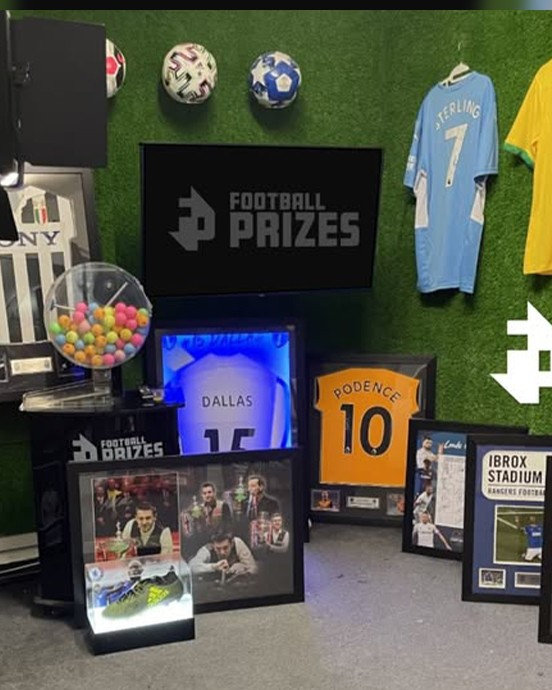

Running vision and graphics live, in real time, with no second take.
When Football Prizes' live draws started, there was no dedicated production at all: a single phone on a tripod, its built-in microphone, and a TV screen showing the site's entrants. Since then, that's grown into an eight-camera setup with dedicated microphones and the fully produced graphics package running today. Six areas drove that transformation.
OBS became the foundation. Where the host previously streamed straight from a phone's Facebook app with no graphics or audio mixing, OBS opened up live audio and visual mixing, graphics, lower thirds, intro videos, transitions and cutscenes.
As the draws grew more interactive - a bagatelle game, a claw machine, a penny falls and other arcade-style games players enter by answering trivia in the comments - the camera count grew to match. The setup now runs eight cameras at once, covering the host, each game's prize zone, the lottery ball machine, and a close-up on the balls themselves to reassure viewers the draw is genuinely live. Audio moved to DJI Mic wireless mics as separate sources, so the host's voice no longer faded when they walked over to the ball machine.
A different discipline entirely from the scroll-stopping graphics built for paid social ads. Live graphics need to stay on-brand without pulling attention away from the host or the games themselves, and that balance has held through several rebrands. Graphics are also built around what's live on screen: to reinforce that the draw is genuine, the ball machine and the host are shown on two separate live feeds at once, with the host able to move between them to prove neither is pre-recorded.
A dedicated intro sequence - a standby screen, a two-minute countdown, then a thirty-second hype intro with upbeat music and crowd noise bleeding into the host's opening - gives latecomers time to join before results start. Outros redirect winners (and non-winners) back to the site while the moment is still fresh. Cutscenes give each arcade machine its own short intro that leads smoothly back to the host before they interact with it.
The only lighting used to be an office ceiling light. It's since moved to softboxes and directional LEDs, which matter more than they sound: several of the machines (the claw machine's glass, the ball machine, the bagatelle's perspex) reflect like a mirror without carefully placed directional light.
Built from scratch to make scene switching as fast as the draw demands. Macros connect to OBS hotkeys to give single buttons a long-press/short-press function - long-press plays a machine's cutscene the first time it's used that draw, short-press jumps straight back to that scene without replaying the intro. A one-click setup button launches OBS, opens the Google Drive draw sheet, and connects Facebook Live Producer in one go, and two dedicated buttons - one for standby, one for mute - are there if anything goes wrong for the host live.
Live production is a different discipline to editing paid social ads, because almost everything has to be planned for in advance rather than fixed in the edit. Backup cameras, backup mics, a standby screen and a mute button all exist for that reason - and the graphics mindset flips too: instead of designing to stop the scroll, the goal becomes staying out of the way of the live feed.

Past